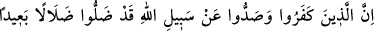

Senin peygamberliğine “şâhit olarak Allah yeter.” Şöyle ki O, senin muarızlarını
büyük mûcizelerle susturmuş ve başkalarının şâhitlik etmesine lüzum kalmayacak
şekilde apaçık delillerle senin nübüvvet dâvânı tasdik etmiştir. Şahit olarak O sana
yeter. Sanki Allah Teâlâ şöyle buyuruyor: “Ey Muhammed! Yâhûdîler seni yalanladılar
diye üzülme, onlara aldırma. Çünkü alemlerin Rabbı olan Allah, senin doğruluğunu
tasdik ediyor. Semalardaki bütün melekler de seni tasdîk ediyorlar. Kimi ki âlemlerin
Rabbi, arşda, kürsîde ve yedi kat semâlardaki bütün melekler doğrularsa, onun
insanların en alçakları olan yâhûdîlerin yalanlamasına îtibar etmesi gerekmez.
167- İnkâr eden ve (başkalarını da) Allah yolundan alıkoyanlar şüphesiz doğru
yoldan çok uzaklaşmışlardır.
Allah’ın sana indirdiklerini ve doğruluğuna şehadet ettiği nübüvvetini “inkâr eden”
yâhûdîler “ve Allah yolundan alıkoyanlar” yâni içlerinden İslâm’ı kabul etmek
isteyenlere “Bizim kitâbımız (Tevrat) da Muhammed’in vasıfları yoktur.” diyerek mani
olanlar, inkarları ve Hak yolunu engellemeleri sebebiyle “şüphesiz doğru yoldan çok
uzaklaşmışlardır.” Onlar hem kendileri sapmışlar, hem de başkalarını saptırmışlardır.
Başkalarını dalalete düşüren, artık sapıklıkta kök salmış demektir. Onun içine düştüğü
dalaletten kurtulması uzak bir ihtimaldir.
168- İnkâr edip zulmedenleri Allah asla bağışlayacak değildir. Onları (başka) bir
yola iletecek de değildir.
Yukarıda zikrettiğimiz îman esaslarını “inkâr edip” Muhammed aleyhisselama,
nübüvvetini kabul etmemek ve onun güzel sıfatlarını gizleyip bunların yerlerine kötü
sıfatlar koymak sûretiyle veyâ insanlara, dünyâda ve âhirette kurtuluşa ermelerini
engellemek sûretiyle “zulmedenleri Allah asla bağışlayacak değildir.” Zâten kâfirin
mağfiret olunması muhaldir. Allah onları bir yola “iletecek de değildir.”